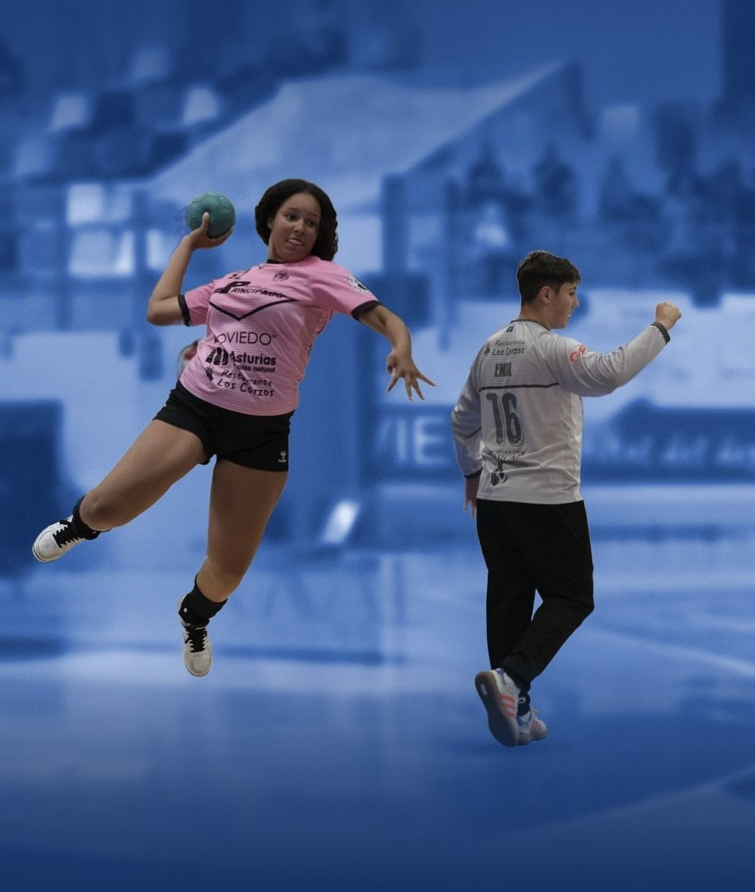
Torneo NacionalBalonmano
Vetusta
- 25 – 27 junio 2027
- Oviedo, Asturias
- Cadete e infantil
- Masculino y femenino
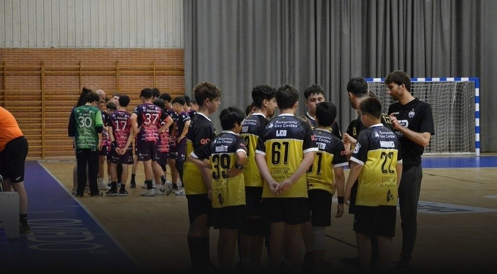
Cuarta edición
En sus tres primeras ediciones, el torneo ha traído a Oviedo a 16 clubes y selecciones llegados de 12 provincias diferentes.
- IJunio 2024
- IIJunio 2025
- IIIJunio 2026 · resultados ›
- IV25, 26 y 27 de junio de 2027
Clubes que han jugado el torneo
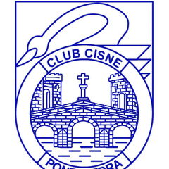
Club Cisne BalonmanoPontevedra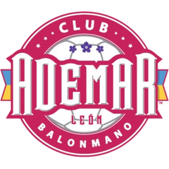
Ademar de LeónLeón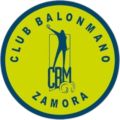
Balonmano ZamoraZamora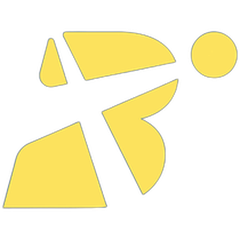
Selección AsturianaAsturias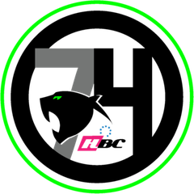
Handball Camargo 74Cantabria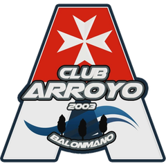
Balonmano ArroyoValladolid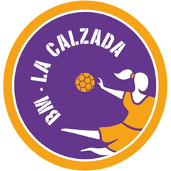
BM La CalzadaAsturias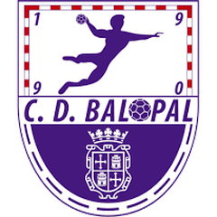
CD BalopalPalencia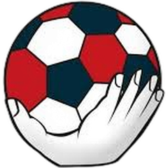
Egia EskubaloiaGipuzkoa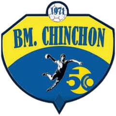
BM ChinchónMadrid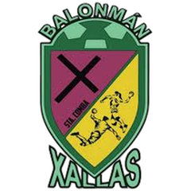
BM XallasA Coruña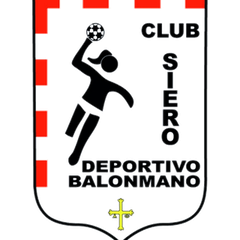
Club Siero D.B.Asturias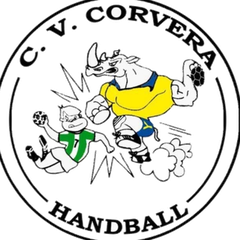
Corvera HandballAsturias- Deportivo EstadioAsturias
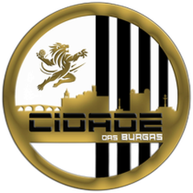
BM Cidade das BurgasOurense- Malkaitz EskubaloiaNavarra
Tres días de balonmano
| Categoría | Nacidos en |
|---|---|
| Cadete masculino | 2011 / 2012 |
| Cadete femenino | 2011 / 2012 |
| Infantil masculino | 2013 / 2014 |
| Infantil femenino Nueva | 2013 / 2014 |
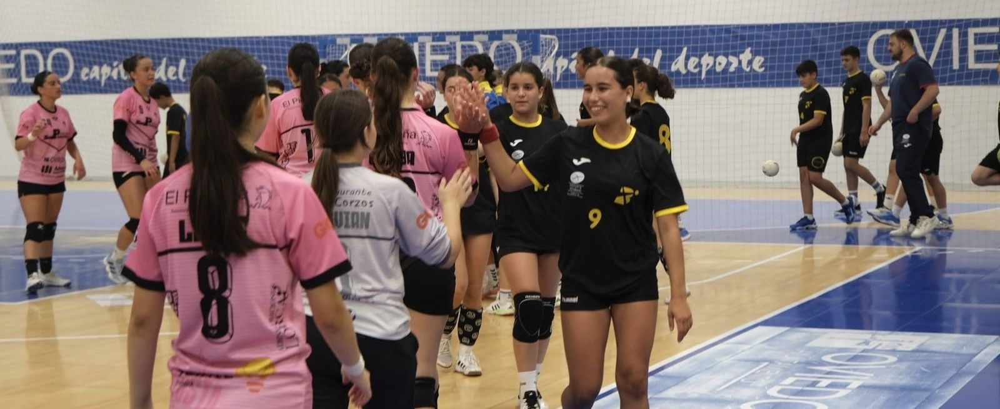
- Viernes 25Tarde
Llegada, alojamiento y primeros partidos.
- Sábado 26Todo el día
Jornada completa en las dos sedes.
- Domingo 27Mañana
Últimos partidos, clausura y entrega de trofeos.
Partidos
La duración de los partidos y descansos y el número de tiempos muertos dependerán de los equipos inscritos.
Arbitrajes
A cargo del Comité Técnico de Árbitros de la Federación de Balonmano del Principado de Asturias.
En directo
Todos los partidos del Florida Arena se emiten en el canal de YouTube del club.
Trofeos
Para el campeón de cada categoría y para el mejor jugador o jugadora y el mejor portero o portera.
Dónde se juega
Los partidos se reparten en dos pabellones de alto nivel: el Florida Arena y el Polideportivo de Vallobín.
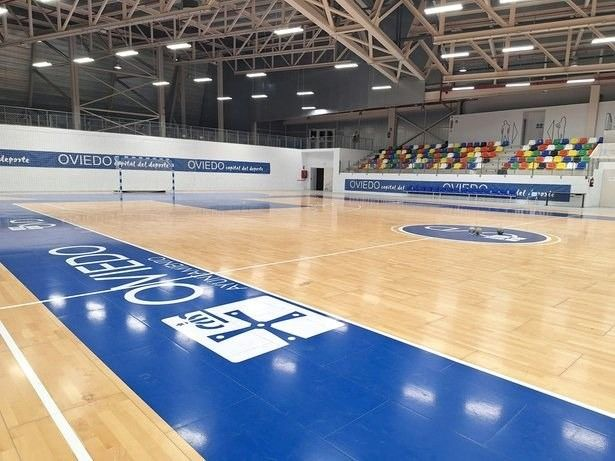
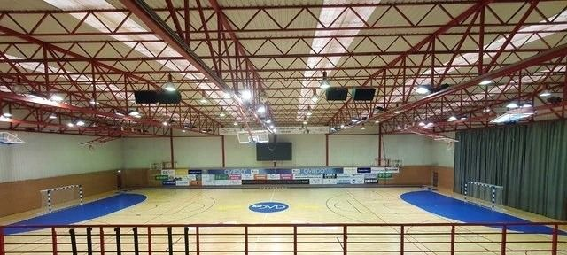
Polideportivo de Vallobín
Calle Vázquez de Mella, s/n33012 Oviedo, Asturias Cómo llegar · Google Maps
- RResidencia
- 24 min
- 1Florida Arena
- 14 min
- 2Vallobín
Pensión completa,
de viernes a domingo
Los equipos se alojarán en la Residencia Universitaria Micampus Oviedo La Gruta, a 24 minutos a pie del Florida Arena y a 31 del Polideportivo de Vallobín.
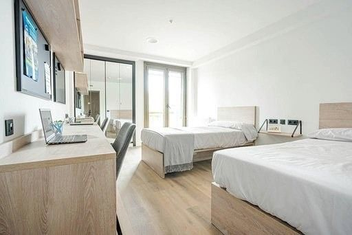
Residencia Micampus Oviedo La Gruta (micampusresidencias.com). En caso de no disponibilidad, existe la posibilidad de alojarse en otro establecimiento. Cómo llegar
| Viernes 25 | Sábado 26 | Domingo 27 | |
|---|---|---|---|
| Desayuno | — | Incluido | Incluido |
| Comida | — | Incluida | Picnic para la vuelta |
| Cena | Incluida | Incluida | — |
Todos los locales están entre el Florida Arena y el Polideportivo de Vallobín. Además, alguna comida podrá hacerse en la residencia.
Alergias e intolerancias. Si algún jugador o jugadora tiene alergias o intolerancias alimentarias, debe comunicarlo con antelación a la organización del torneo.
Todo a un paseo
- Sedes
- 1Florida Arena
- 2Polideportivo de Vallobín
- Alojamiento
- RResidencia Micampus La Gruta
- Comidas
- 3Brasería Lokal
- 4Cafetería Moon
- 5Sidrería Las Güelas
- 6Sidrería Pichote
- Ocio
- 7Piscinas del Parque del Oeste
- 8Parque Purificación Tomás
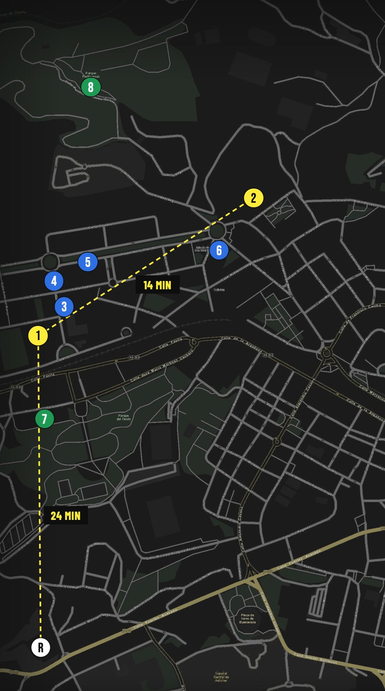
Oviedo, entre
partido y partido
Entre partidos queda tiempo para conocer la ciudad. Estas son nuestras propuestas, todas a poca distancia de las sedes.
Casco antiguo
La Catedral de San Salvador, la Plaza del Fontán y el Campo San Francisco.
Monte Naranco
Santa María del Naranco y San Miguel de Lillo, dos de las construcciones más significativas del prerrománico europeo.
Piscinas del Parque del Oeste
Entre la residencia y los pabellones, para quien quiera refrescarse.
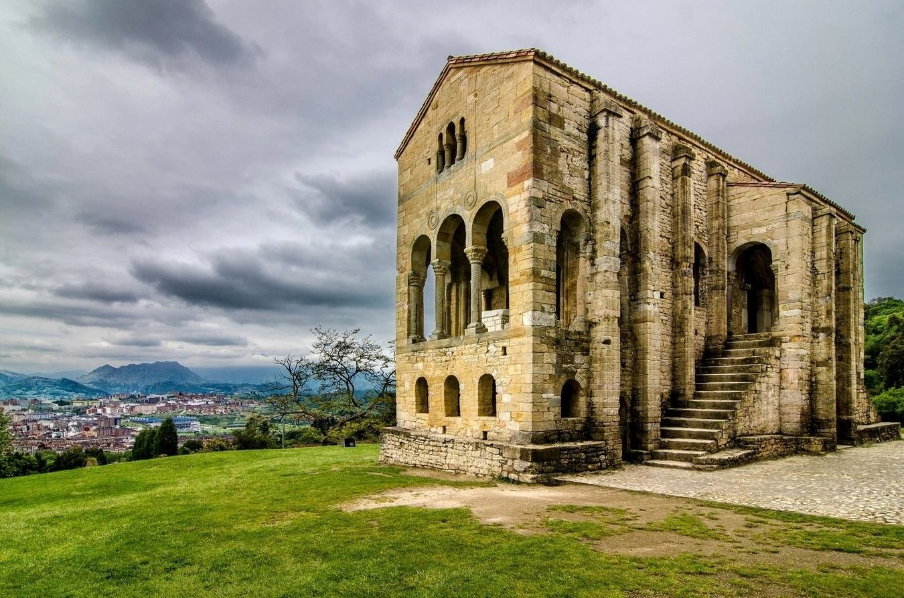
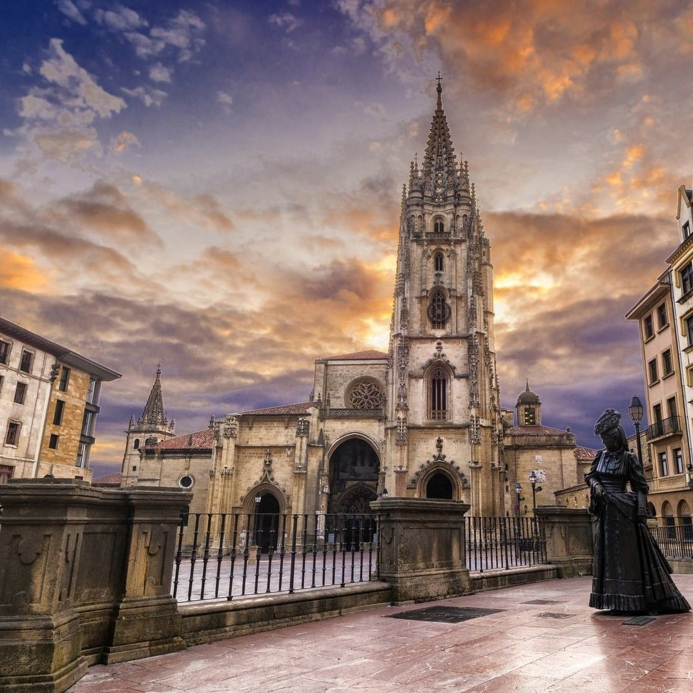
Inscripción
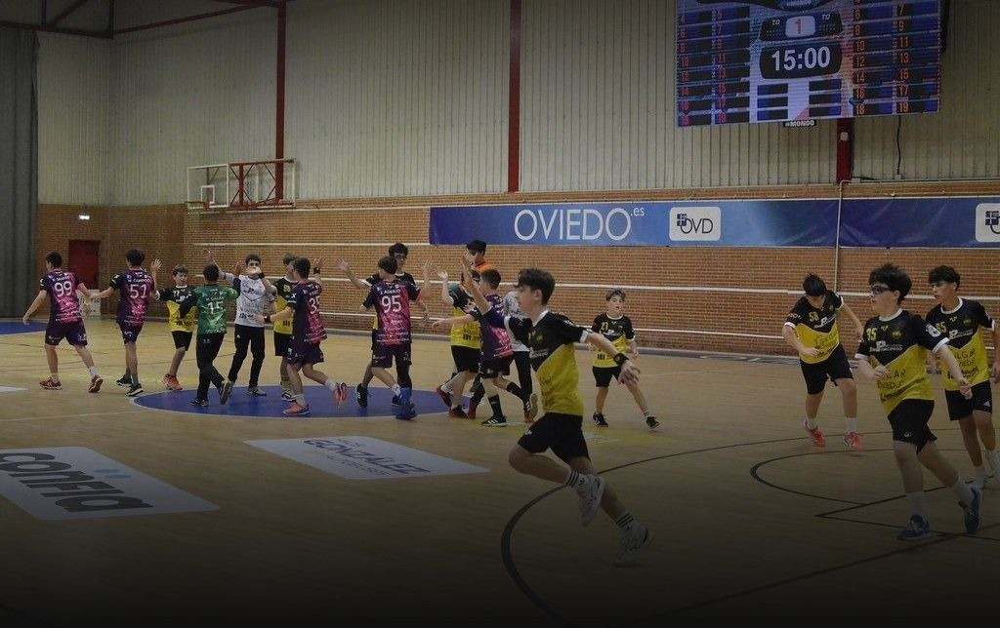
Alojamiento
Residencia Micampus Oviedo La Gruta, noches del viernes y el sábado.
Pensión completa
De la cena del viernes al desayuno del domingo.
Picnic de vuelta
Para el viaje de regreso a casa.
Seguro médico
Para todos los jugadores y jugadoras inscritos.
Inscribe a tu equipo
- Correo
- balonmanovetusta@gmail.com
- WhatsApp y teléfono
- 626 84 20 32 · Daniel
- Web del torneo
- balonmanovetusta.com/torneo
Juntos lo hacemos posible
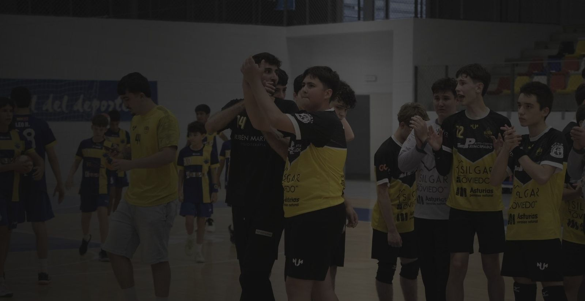
¡Os esperamos!
25, 26 y 27 de junio de 2027 en Oviedo
balonmanovetusta.com · @balonmanovetusta